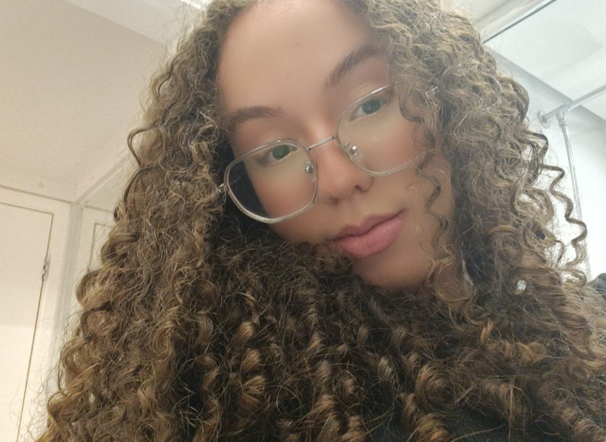
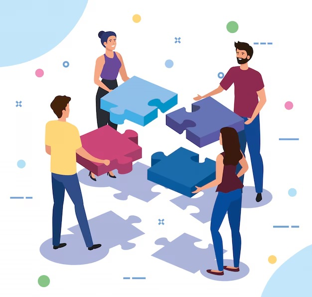
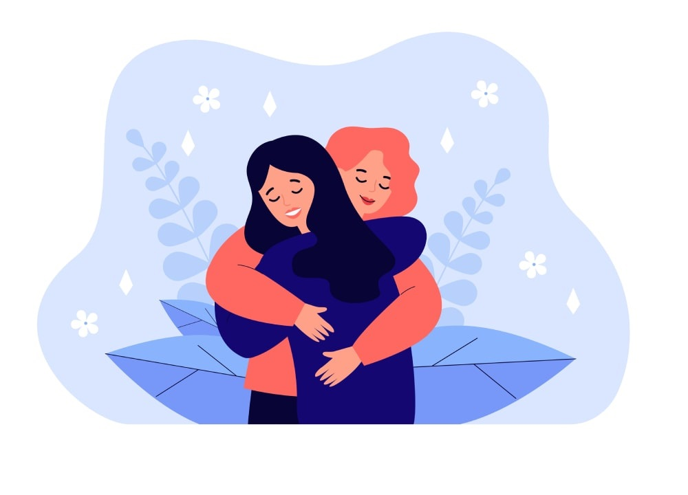
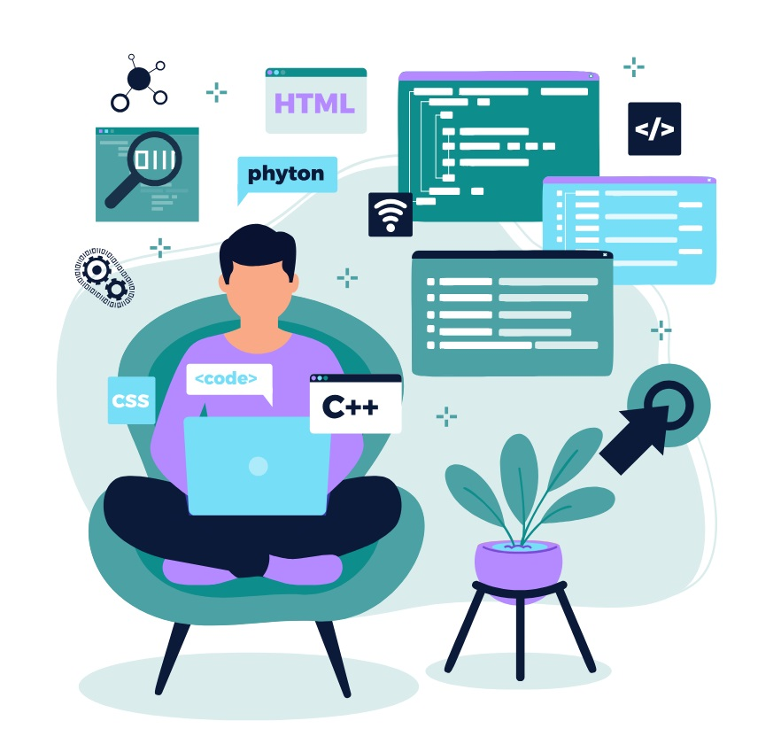
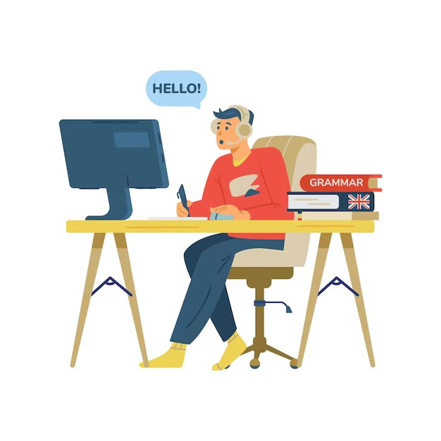

Bruna Araujo

Me chamo Bruna, tenho 17 anos e atualmente estudo no colégio
EME Profª Alcina Dantas Feijão, onde estou cursando o ensino
médio junto com o itinerário de Tecnologia da Informação (TI).
O itinerário de TI junto com os estudos tem sido uma jornada
desafiadora, mas estou disposta a aprender coisas novas e expandir
meus conhecimentos.
Fora da sala de aula, valorizo muito o tempo que passo com minha
família e amigos. Porém, também aprecio os meus momentos sozinhas,
onde posso simplesmente me desconectar do mundo por um tempo.
Interesses profissionais
Nos próximos 1 a 2 anos, meu foco é ingressar em uma faculdade e conseguir um bom
emprego para dar início à minha jornada profissional. Quero estudar para adquirir
bons conhecimentos e procurar oportunidades que me permitam crescer e desenvolver
minhas habilidades.
Ao longo dos próximos 8 a 10 anos, pretendo fortalecer minha carreira na minha área de
interesse e, eventualmente, abrir meu próprio negócio. Quero aplicar osconhecimentos
adquiridos ao longo dos anos, buscando sempre expandir meus conhecimentos.
Estarei sempre aberta a novas experiências e desafios que possam ampliar minhas conquistas profissionais.
Daqui a 15 anos, meu objetivo é estar bem-sucedida e realizada na minha carreira.
Tendo construído uma boa reputação e estar disposta a continuar aprendendo e
crescendo profissionalmente, sempre em busca de excelência e inovação.
Soft Skills
Trabalho em equipe  Liderança  Empatia
Hard Skills

Técnico de TI

Curso de inglês
Curso de informática